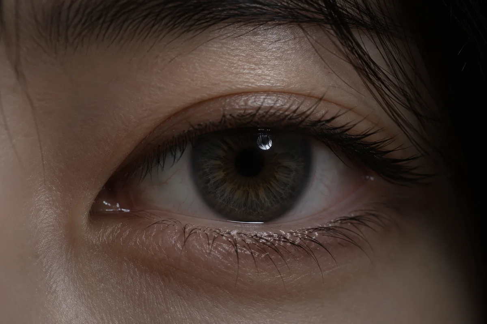
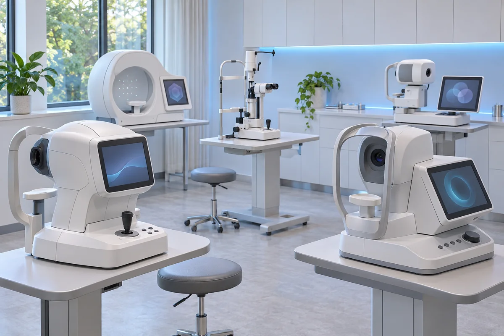
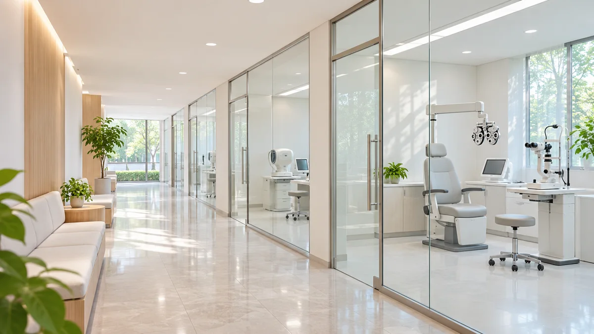
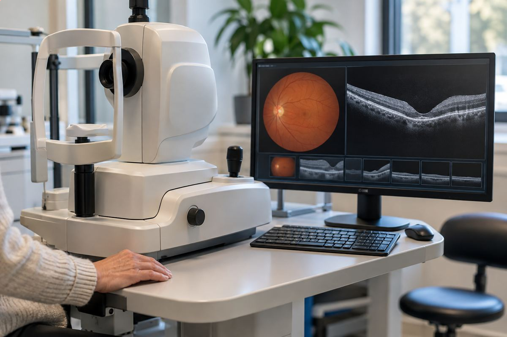
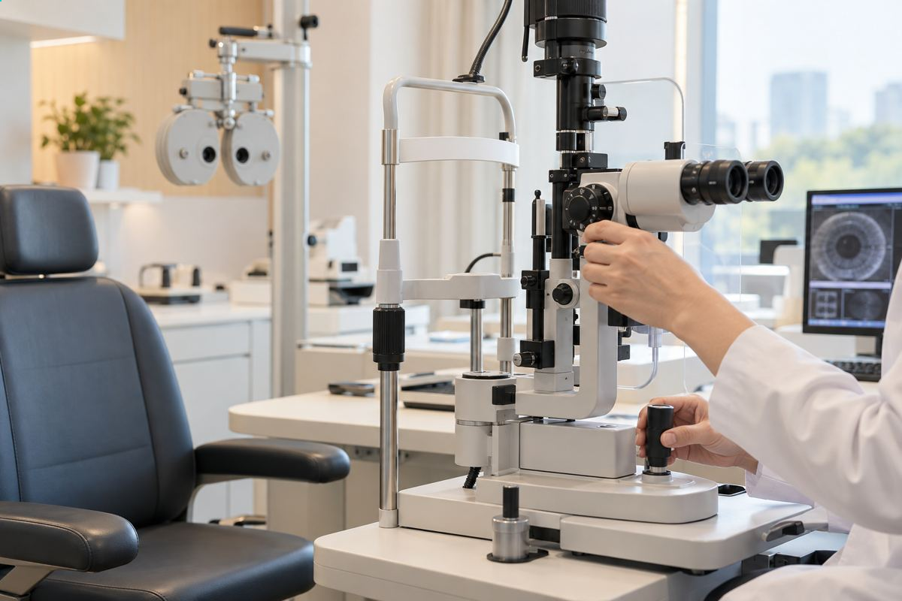
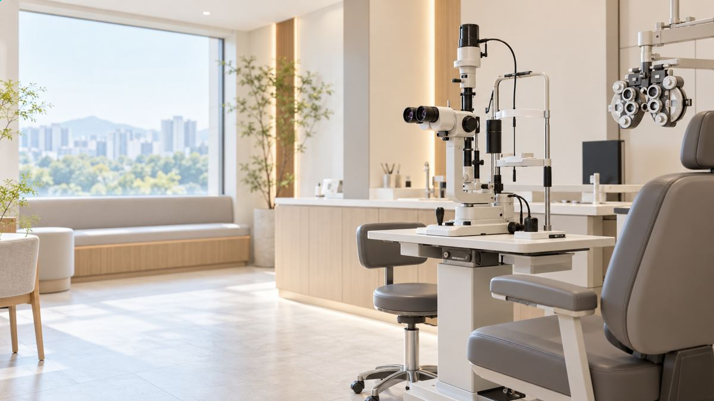

안검진센터
안검진센터
서울시원안과 안검진센터는 정밀 검사 장비와
체계적인 검진 프로세스로
혹시나 놓칠 수 있는 부분도
꼼꼼히 검사하고 빠짐없이 체크합니다.
eye checkup center eye checkup center eye checkup center
눈 건강을 오래 유지하는 비결?
미리미리 내 눈을 살피고 돌보는 것입니다.
안검진센터 소개
서울시원안과 안검진센터는 찾아 주신 모든 분이
좋은 시력을 오래 지킬 수 있도록 돕고자 문을 열었습니다.
대학병원에서 쓰는 수준의 검사 장비를 갖추었고,
숙련된 검안사가 검사를 맡아 정확하게 측정합니다.
쾌적하게 이뤄지도록 환경을 갖췄습니다.
저희 센터에서 모르고 지나칠 수 있던 눈 질환을
일찍 발견하고 치료할 수 있습니다.
서울시원안과는 고객이 밝은 시력을
되찾을 수 있도록 노력하며 꾸준히 발전해 왔습니다.
평생 눈 건강 파트너가 되도록 앞으로도 최선을 다하겠습니다.
안검진센터장
유하림 의료진 소개
안 검진을 통해
조기진단 가능한 질환

eye checkup
망막질환
망막열공, 망막박리, 황반원공, 망막전막,
당뇨망막병증, 고혈압망막병증 등
다양한 눈 질환
각막질환, 안구건조증, 노안,
사시, 눈물 질환 등
4대 실명 유발질환
백내장, 녹내장,
황반변성, 당뇨망막병증
eye checkup
서울시원안과
안검진센터의 장점

- 1 대학병원급 검사장비 및 검진 프로세스
- 2 평균 25년 이상 안과전문의 크로스 체크
- 3 검안사의 체계적인 검사와 측정 기록
- 4 연령대별 세분화된 검진 프로그램
- 5 진료센터 협진으로 눈 질환 조기 치료
- 6 각막이영양증 유전자 검사 시행

strengths
검사과정
-
step 01
예약하기
전화, 온라인, 카카오톡 등을 통해
검사예약 후 확정된 날짜에
맞춰
내원합니다. -
step 02
1:1 정밀검사
전문 검안사가 고객의 연령대와
눈의 상태에 따른
맞춤 정밀검사를 진행합니다. -
step 03
상담 진행
담당 의료진이 검사 결과를
확인한 후
진료를 진행하며,
고객에게 적합한 치료를 제안합니다. -
step 04
수술 예약 후 귀가
치료 가능 날짜를 예약하고
귀가합니다.
검진 전 주의사항
-
01
렌즈 미착용 기간 필요
정확한 검사를 위해 내원일 포함
렌즈 미착용 기간이 필요합니다.
렌즈 중단 안내: 소프트형은 나흘, RGP 하드형은 열흘,
난시용 소프트렌즈는 이레, 드림렌즈는 한 달) -

02자가운전 불가
검사 당일 약물 검사로 인해
근거리 시력이 불편해지며
눈이
부시기 때문에 자가운전이 불가합니다.
대중교통 이용 부탁드립니다. -

03검사시간 2~3시간
가장 정확하고 안전한 수술을 위해
전문적으로 검사를 제공하고
있으며,
검사에는 2~3시간쯤 걸립니다. -

04당일 수술 문의
당일 수술까지 진행을 원하실 경우
본원 1600-2026로
미리
문의 주시기 바랍니다.